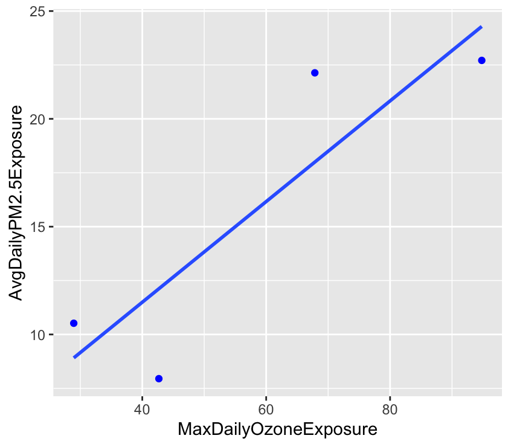

7 A FHIR PIT Tutorial


FHIR PIT: HL7 Fast Healthcare Interoperability Resources Patient data Integration Tool: A Tutorial
Date Modified: July 8, 2024
Authors: Juan Garcia  , Kara Fecho
, Kara Fecho  , Hong Yi
, Hong Yi 
Key Terms: Data Integration, Electronic Health Record, Exposure, FHIR, Geocoded Address
Programming Languages: R, Bash
7.1 Introduction
This tutorial provides example code in R:
To set up FHIR PIT.
To analyze the results from the FHIR PIT output.
7.1.1 Disclaimer
The patient dataset used in this tutorial is synthetic. When using actual patient or participant datasets containing Protected Health Information (PHI), one must run FHIR PIT within a secure enclave and abide by all federal and institutional regulations.
7.1.2 Motivation
Environmental exposures are increasingly recognized as important to consider when conducting human subjects research. Unfortunately, associating environmental exposures data with subject-level data is challenging due to the complexity of the data and the varied spatiotemporal resolutions. FHIR PIT is an open-source tool to link electronic health record (EHR) data in FHIR format with environmental exposures data derived from public sources. See Section Considerations for tools to support other common data models (CDMs).
7.1.3 Background
FHIR PIT (HL7 Fast Healthcare Interoperability Resources Patient data Integration Tool) is an open-source data integration pipeline to support subject-level research on social and environmental determinants of health and disease (26).
In essence, the pipeline is a sequence of transformations configured from a YAML file (27). The transformation steps join FHIR patient records with environmental exposures estimates using patient geocodes (e.g., primary residence) and date(s) of healthcare visits as the spatiotemporal links. At the end of each linkage step, FHIR PIT saves the linked tables to an intermediate folder to support rapid re-execution, should any given step fail to complete (e.g., lack of disk space). To support multiple healthcare visits, FHIR PIT vectorizes the FHIR patient records by grouping FHIR domains (e.g., Condition, Laboratory, Medication, Procedure) and counting events within a domain on a per-day basis. The features associated with the patient are then grouped by user-defined study periods (e.g., year) and aggregated with user-defined statistics (e.g., counts, mean, median, first measurement, last measurement).
FHIR PIT was developed to support ICEES (Integrated Clinical and Environmental Exposures Service) (28,29). However, the tool is not specific to ICEES, but rather can be used to integrate any source of patient FHIR files with any source of environmental exposures data. In this tutorial, we use synthetic FHIR files and randomly sampled environmental exposures data derived from several public sources:
- US Environmental Protection Agency (EPA) airborne pollutant exposures data - The US EPA maintains collections of model-derived estimates of airborne pollutant exposure data such as PM2.5 and ozone at varying spatial and temporal resolutions. FHIR PIT uses the data to calculate, for example, average daily PM2.5 exposure and maximum daily ozone exposure over a defined study period.
- US Department of Transportation (DOT), Federal Highway Administration (FHA), Highway Performance Monitoring System (HPMS) major roadway/highway exposures data - The US DOT maintains a variety of metrics on roadway data. FHIR PIT uses the data to calculate point estimates of primary residential distance from the nearest major roadway or highway.
- US Census Bureau TIGER/line roadway data - The US Census Bureau also maintains metrics on roadway data. FHIR PIT uses the data to supplement the US DOT data.
- US Census Bureau American Community Survey (ACS) socio-economic exposures data - The US Census Bureau’s ACS is a 5-year survey sample from the decennial nationwide US census. FHIR PIT uses a subset of the available ACS survey estimates of socio-economic exposures, including survey estimates on residential density, household median income, and household access to health insurance.
- NC Department of Environmental Quality (DEQ) concentrated animal feeding operations (CAFO) exposures data - North Carolina’s DEQ maintains data on the location of all registered CAFOs across the state. FHIR PIT uses the data to calculate point estimates of primary residential distance from the nearest CAFO.
- NC Department of Environmental Quality (DEQ) landfill exposures data - North Carolina’s DEQ maintains data on the location of all registered active and inactive landfills across the state. FHIR PIT uses the data to calculate point estimates of primary residential distance from the nearest landfill.
7.2 Tutorial
7.2.1 Setup
Install Docker. Follow instructions in Docker installation documentation for your operating system.
Assign WORK_DIR the directory you would like to save FHIR PIT and its outputs to.
Clone FHIR PIT into the WORK_DIR directory.
7.2.2 Execute FHIR-PIT
Run FHIR PIT in a docker container with -v. This will allow the output data to persist and be easily accessible by users on the host.
7.2.3 Access and Analyze Results
The main outputs to consider are in ICEES, ICEES2 and ICEES2_dei directories (named in reference to ICEES, but not specific to ICEES). Each directory contains one or more CSV files with information at different granularities.
year_ <- 2010
basepath <- file.path(work_dir, "data", "output")
icees2dei_patient_url <- file.path(basepath, "icees2_dei",
sprintf("%spatient_deidentified", year_))The ICEES directory contains one CSV file per subject. Each CSV file consists of the subject’s visits, concatenated with the corresponding environmental exposure estimates for that day and that subject’s location. If a subject has multiple visits per day, then the transformation “PreprocPerPatSeriesToVector” step aggregates multiple daily visits by counting how many times a drug or diagnosis occurred. The directory for each subject is indexed by the “patient_num” column. The ICEES2 directory contains a single CSV file with the aggregation of all subjects grouped by (subject, study period). Lastly, the ICEES2DEI directory contains the same aggregated CSV file, but the data have been stripped of all PHI per HIPAA Safe Harbor method (30). The fully deidentified file then abides by all federal regulations surrounding privacy and security, although institutional regulations may remain. For exposition purposes, we focus on the deidentified ICEES2DEI CSV file and reorder its columns.
icees2dei_colorder <- scan("icees2dei_patient_column_order.txt",
what = "", sep = "\n")
icees2dei <- read.csv(icees2dei_patient_url,
header = TRUE)[, icees2dei_colorder]
icees2dei# index year AvgDailyPM2.5Exposure AvgDailyPM2.5Exposure_StudyAvg
# 1 0 2010 7.949999 8.645932
# 2 1 2010 10.520382 8.645932
# 3 2 2010 22.711028 12.472791
# 4 3 2010 22.134923 10.000803
# AvgDailyPM2.5Exposure_StudyMax MaxDailyPM2.5Exposure
# 1 38.89938 20.42399
# 2 38.89938 16.50489
# 3 49.20912 35.83996
# 4 50.76701 37.09866
# MaxDailyPM2.5Exposure_StudyAvg MaxDailyPM2.5Exposure_StudyMax
# 1 14.07015 54.65602
# 2 14.07015 54.65602
# 3 20.50664 71.36617
# 4 16.74545 67.37352
# AvgDailyOzoneExposure AvgDailyOzoneExposure_StudyAvg
# 1 36.97466 46.99595
# 2 18.62635 46.99595
# 3 55.75696 38.58856
# 4 38.33320 40.13805
# AvgDailyOzoneExposure_StudyMax MaxDailyOzoneExposure
# 1 128.36066 42.67887
# 2 128.36066 28.94073
# 3 69.68106 94.79951
# 4 76.71777 67.85281
# MaxDailyOzoneExposure_StudyAvg MaxDailyOzoneExposure_StudyMax
# 1 61.60031 198.8417
# 2 61.60031 198.8417
# 3 55.08151 103.9576
# 4 55.48645 115.6936
# AvgDailyPM2.5Exposure_2 MaxDailyOzoneExposure_2 AvgDailyCOExposure_2
# 1 9.274049 36.54099 213.2262
# 2 9.498967 35.70597 358.0131
# 3 8.238118 39.11024 212.4620
# 4 8.300655 38.53758 193.7690
# AvgDailyNOExposure_2 AvgDailyNO2Exposure_2 AvgDailyNOxExposure_2
# 1 3.048349 11.539853 14.58820
# 2 14.655994 22.662306 37.31830
# 3 2.493993 10.630901 13.12489
# 4 1.840359 8.475516 10.31587
# AvgDailySO2Exposure_2 AvgDailyAcetaldehydeExposure_2
# 1 1.956961 0.6987113
# 2 3.789237 0.9583015
# 3 1.613538 0.8120486
# 4 1.097606 0.7321192
# AvgDailyFormaldehydeExposure_2 AvgDailyBenzeneExposure_2 ObesityBMI
# 1 0.9163324 NA 0
# 2 1.3879702 NA 0
# 3 1.0863108 NA 0
# 4 0.9295859 NA 0
# TotalEDVisits TotalInpatientVisits TotalEDInpatientVisits Sex2 Sex
# 1 0 0 0 Male Male
# 2 0 0 0 Male Male
# 3 0 0 0 Male Male
# 4 0 0 0 Male Male
# Race Ethnicity MajorRoadwayHighwayExposure RoadwayDistanceExposure
# 1 Unknown Unknown 227.9604 12.42057
# 2 Unknown Unknown 2098.2448 301.82455
# 3 Unknown Unknown 336.5802 252.79614
# 4 Unknown Unknown 460.0862 462.22059
# RoadwayType RoadwayAADT RoadwaySpeedLimit RoadwayLanes CAFO_Exposure
# 1 NA NA NA NA 574089.1
# 2 NA NA NA NA 567777.9
# 3 NA NA NA NA 472817.7
# 4 NA NA NA NA 572968.6
# Landfill_Exposure EstResidentialDensity
# 1 819888.5 NA
# 2 813577.6 NA
# 3 732120.1 NA
# 4 826018.3 NA
# EstProbabilityHighSchoolMaxEducation EstProbabilityNoHealthIns
# 1 NA NA
# 2 NA NA
# 3 NA NA
# 4 NA NA
# EstProbabilityHouseholdNonHispWhite EstProbabilityESL
# 1 NA NA
# 2 NA NA
# 3 NA NA
# 4 NA NA
# EstProbabilityNonHispWhite EstHouseholdIncome EstResidentialDensity25Plus
# 1 NA NA NA
# 2 NA NA NA
# 3 NA NA NA
# 4 NA NA NA
# EstProbabilityNoAuto ur Estradiol TesticularDysfunctionDx ProstateCancerDx
# 1 NA NA 0 0 0
# 2 NA NA 0 0 0
# 3 NA NA 0 0 0
# 4 NA NA 0 0 0
# AnxietyDx Formoterol FibromyalgiaDx Metaproterenol Indacaterol
# 1 0 0 0 0 0
# 2 0 0 0 0 0
# 3 0 0 0 0 0
# 4 0 0 0 0 0
# OvarianDysfunctionDx Fluoxetine PneumoniaDx Triptorelin Omalizumab
# 1 0 0 0 0 0
# 2 0 0 0 0 0
# 3 0 0 0 0 0
# 4 0 0 0 0 0
# Mepolizumab Fluticasone Sertraline Budesonide AlcoholDependenceDx
# 1 0 0 0 0 0
# 2 0 0 0 0 0
# 3 0 0 0 0 0
# 4 0 0 0 0 0
# Flunisolide Nandrolone Venlafaxine Androstenedione Arformoterol
# 1 0 0 0 0 0
# 2 0 0 0 0 0
# 3 0 0 0 0 0
# 4 0 0 0 0 0
# MenopauseDx Diphenhydramine Paroxetine DrugDependenceDx DepressionDx
# 1 0 0 0 0 0
# 2 0 0 0 0 0
# 3 0 0 0 0 0
# 4 0 0 0 0 0
# Mometasone AutismDx Progesterone Prednisone Escitalopram CroupDx Goserelin
# 1 0 0 0 0 0 0 0
# 2 0 0 0 0 0 0 0
# 3 0 0 0 0 0 0 0
# 4 0 0 0 0 0 0 0
# Cetirizine Citalopram CoughDx EndometriosisDx TesticularCancerDx
# 1 0 0 0 0 0
# 2 0 0 0 0 0
# 3 0 0 0 0 0
# 4 0 0 0 0 0
# UterineCancerDx Fexofenadine Salmeterol Prasterone Duloxetine Estrogen
# 1 0 0 0 0 0 0
# 2 0 0 0 0 0 0
# 3 0 0 0 0 0 0
# 4 0 0 0 0 0 0
# PregnancyDx Ciclesonide ObesityDx Testosterone Beclomethasone
# 1 0 0 0 0 0
# 2 0 0 0 0 0
# 3 0 0 0 0 0
# 4 0 0 0 0 0
# OvarianCancerDx ReactiveAirwayDx Medroxyprogresterone DiabetesDx
# 1 0 0 0 0
# 2 0 0 0 0
# 3 0 0 0 0
# 4 0 0 0 0
# Hydroxyzine AlopeciaDx Propranolol Theophylline KidneyCancerDx AsthmaDx
# 1 0 0 0 0 0 0
# 2 0 0 0 0 0 0
# 3 0 0 0 0 0 0
# 4 0 0 0 0 0 0
# Metformin Albuterol Tamoxifen Estropipate Leuprolide CervicalCancerDx
# 1 0 0 0 0 0 0
# 2 0 0 0 0 0 0
# 3 0 0 0 0 0 0
# 4 0 0 0 0 0 0
# Histrelin Ipratropium Trazodone AgeStudyStart Active_In_Year
# 1 0 0 0 14 1
# 2 0 0 0 17 1
# 3 0 0 0 20 1
# 4 0 0 0 17 1The deidentified ICEES2DEI CSV file may be used for further analysis. For instance, below we plot AvgDailyPM2.5Exposure vs MaxDailyOzoneExposure to examine the relationship between maximum daily ozone exposure and average daily PM2.5 exposure, noting a strong correlation is not expected for this tutorial, as we randomly sampled the exposures data.
ggplot(icees2dei, aes(y = AvgDailyPM2.5Exposure, x = MaxDailyOzoneExposure)) +
geom_point(color = "blue") +
geom_smooth(method = "lm", se = FALSE)
7.3 Considerations
FHIR PIT must be run within a secure enclave when working with real patient datasets, and all federal and institutional regulations surrounding patient privacy and data security must be met.
FHIR PIT performs linkages between patient datasets and environmental exposures datasets using geocodes (i.e., patient primary residence), study period, and healthcare visit dates. FHIR PIT currently assumes a patient or subject resides in a single geolocation across a defined study period. We plan to adapt FHIR PIT to address mobility by, for example, assessing school-aged children’s home versus public school exposures.
Note that the FHIR PIT application may be memory-intensive, depending on the size of the input datasets. For the sample input data, this tutorial requires approximately 4 GB RAM to run successfully, but the memory requirements may be greater with large input datasets.
Finally, FHIR PIT, by name and function, ingests FHIR files as the preferred CDM. For users who are working with the PCORnet CDM, we offer two tools to map PCORnet to FHIR: pcornet-to-fhir (https://github.com/RENCI/tx-pcornet-to-fhir) and CAMP FHIR (https://github.com/NCTraCSIDSci/camp-fhir). CAMP FHIR additionally maps i2b2 and OMOP to FHIR. Both tools are openly available.
7.4 Concluding Remarks
This tutorial demonstrates how to execute FHIR PIT and analyze its output. The patient dataset used in this tutorial is synthetic and intended for demonstration purposes only. The environmental datasets used in this tutorial are randomly sampled from much larger datasets derived from public sources. Users may substitute the synthetic patient dataset and sample exposures datasets with their own datasets. To add your own data, please update the ‘data/input’ directory. For assistance with FHIR PIT or access to our environmental exposure datasets, please contact fhir-pit@renci.org.